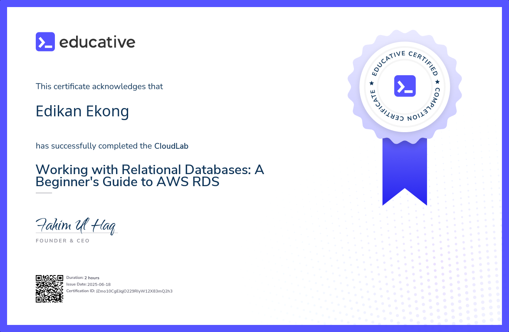
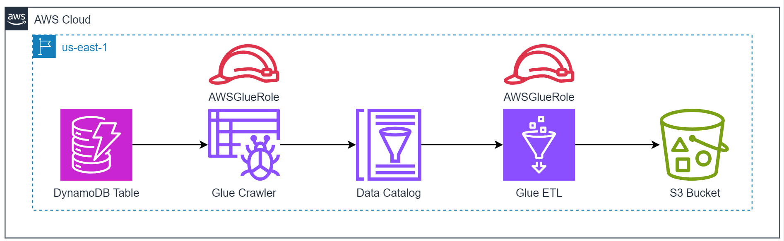
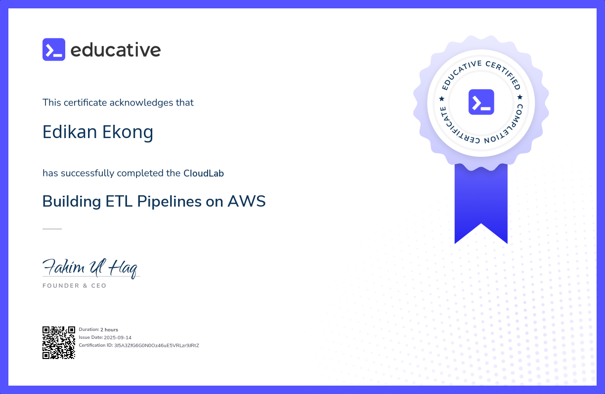
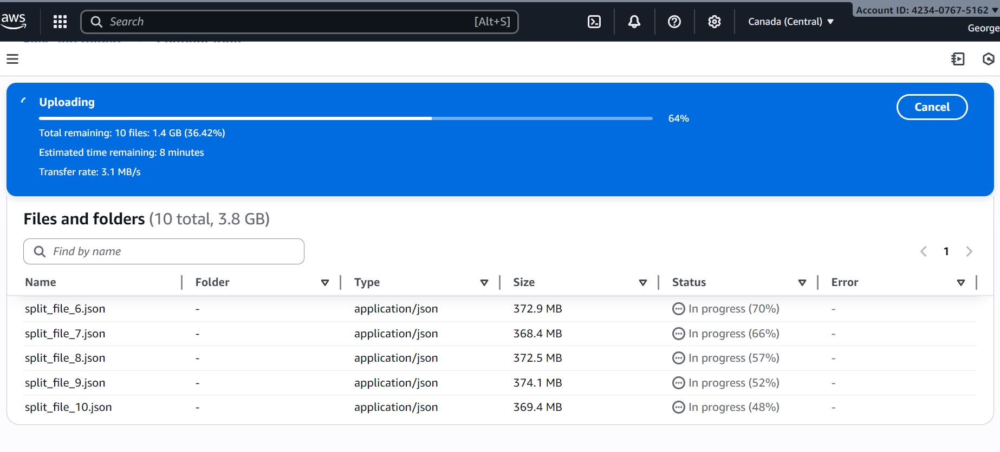

Working with Relational Databases on AWS
Hands-on lab work configuring, managing, and querying relational databases in AWS to strengthen cloud database fundamentals and backend reliability thinking.
These labs show how I build practical cloud skills across databases, ETL workflows, storage, and support-focused troubleshooting. They are where I test, document, and strengthen the systems thinking behind my data engineering work.
Each lab focuses on a concrete capability: storing data, running transformations, querying systems, or building confidence with the tools used in production environments.
This lab focused on building ETL workflows in AWS using managed services to move and prepare data efficiently. The work strengthened my understanding of cloud-native pipelines, service integration, and the reliability concerns that matter when workflows need to run repeatedly.

Service orchestration, schema handling, and analytics-ready storage mapped into a single serverless workflow.
These labs reflect how I am growing as an early data engineer while building on a strong technical support engineering foundation.

Hands-on lab work configuring, managing, and querying relational databases in AWS to strengthen cloud database fundamentals and backend reliability thinking.

Designed and deployed AWS-based ETL workflows to practice scalable data movement, service coordination, and repeatable processing in the cloud.

Worked through cloud storage tasks in AWS S3 to strengthen data ingestion, file handling, and the foundational patterns behind pipeline inputs and outputs.
I use labs to close the gap between learning a service and understanding how it behaves in real workflows, especially where data movement, system reliability, and troubleshooting overlap.
Labs help me practice the building blocks of modern data engineering, including ingestion, transformation, storage, and query workflows.
They also sharpen the habits that matter in technical support engineering: checking assumptions, isolating issues, and understanding service behavior.
This work supports my path as an early data engineer while building on the production awareness and technical depth from my support experience.
I’m continuing to expand this section with deeper AWS, data engineering, and troubleshooting-focused exercises as I build stronger cloud depth.
Reach out if you want to talk about cloud labs, data engineering, or technical support engineering.